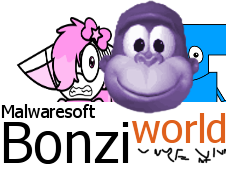

Leading the industry in gorilla-based chat clients.
Cyganworld README
Cyganworld is a BonziWORLD server created by BONZI.LOL, the best BonziWORLD server to ever go online! Cyganworld is simply meant to be a less clusterfucked version of the BonziWORLD server meant for development. If you want it to be free-standing, go ahead but I recommend making some changes to personalize it.NO HEAVY DEPENDENCIES NEEDED, MAKING THIS SERVER FASTER THAN ALL THE OTHER SKIDDIE OWNED CLUSTERFUCKS! ALL YOU NEED IS SOCKET.IO.
Security
Vanilla BonziWORLD rapes itself as soon as someone injects little aids scripts into commands. Here's what CyganWORLD fixed:- JS/HTML injection
- Server crash glitch
- Flooding (alt limit)
- Spamming (slowmode)
Commands
Cyganworld contains the basic BonziWORLD commands you know and love and likely use! The square brackets indicate what you want to put, please don't include them! This is a list of new/changed commandsGod mode
- /restart: restarts the server (assumes it automaticaly restarts when it is turned off)
- /update: updates the settings, colors and blacklist without the server having to restart. SOME SETTINGS WON'T TAKE AFFECT UNTIL RESTARTED, SUCH AS PORT
- /sanitize: now you just do /sanitize and it toggles sanitization on or off.